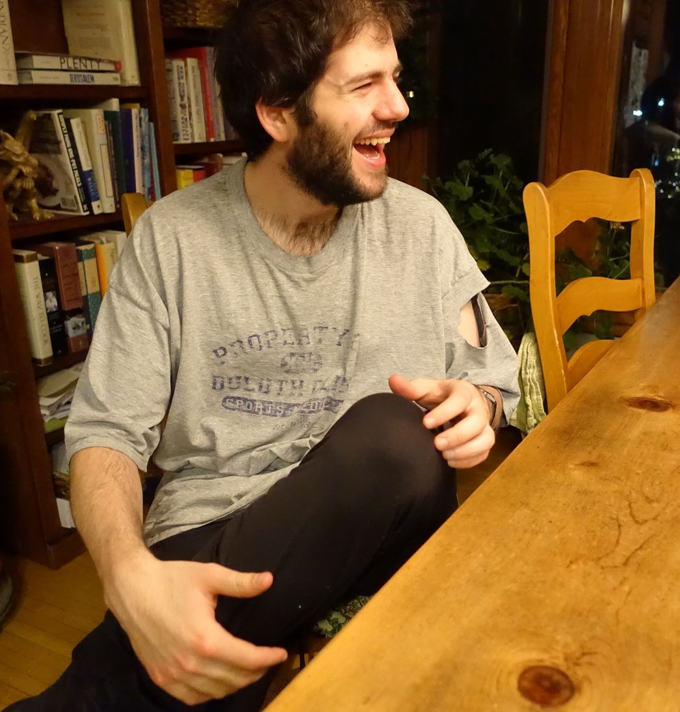
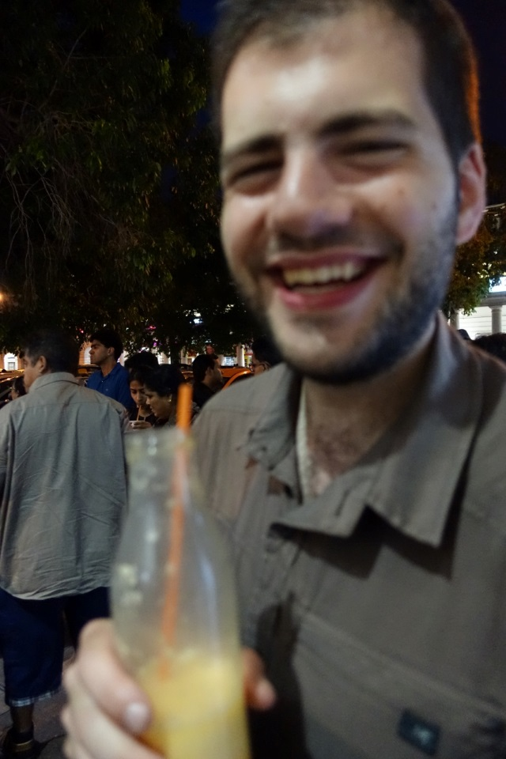
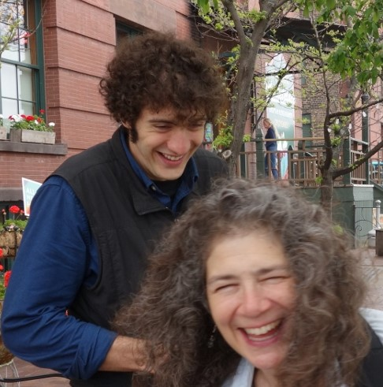
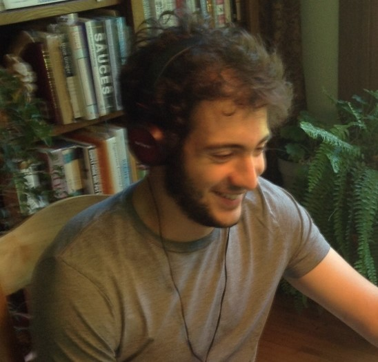
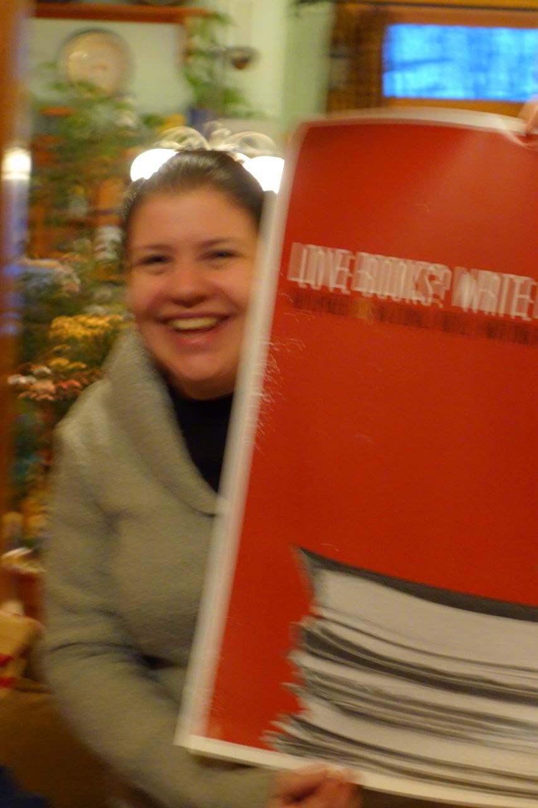
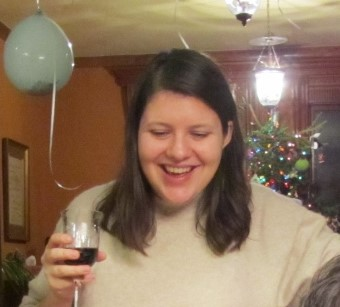

When we see many pictures of the same person, we start acclimating to their humor profile:
Humor profile example #1


Humor profile example #2


Humor profile example #3


Someone may have a specific way their cheek rises as they smile, or tend to hold their mouth open a certain way—all things that together make up someone's humor profile.